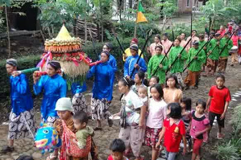
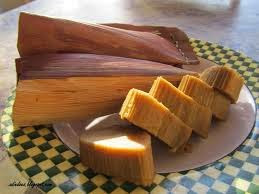
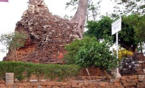

<!DOCTYPE html>
<html lang="en" dir="ltr">
    <meta charset="utf">
    <title>Kota Nganjuk</title>
    <link rel="icon" href="kotaku.jpg">
    <link  rel="stylesheet" href="styleweb.css">
    <link rel="stylesheet" href="https://use.fontawesome.com/releases/v5.6.3/css/all.css">
</html>
<head>
    <body>
        <!--ini menu bar-->
        <div class="semua">
        <div class="menu">
            
            <ul>
                <li><a href="a">Beranda</a></li>
                <li><a href="a">Profil</a></li>
                <li><a href="a">Beranda</a></li>
            </ul>
        </div>
        <!--ini header-->
        <div class="header">
            <div class="gelap">
            </div>
             <h1>
             
             <br>
              Nganjuk
              <br>
              <label>
                  --Kota nyaman nan Rindang--
              </label>
              <br>
              <span>
                  V
              </span>
            </h1>
        </div>    
        

        <div class="about">
            <div class="left">
                <h1>Seputar Nganjuk</h1>
                <p>
                       Nganjuk adalah salah satu dari banyaknya kota yang ada di Jawa Timur 
                       Dengan banyak kuliner,tempat wisata, dan banyaknya budaya yang ada di Kota ini.
                       Pasti penasaran dengan semua itu mari kita cari tahu bersama-sama dan kita datangi
                       kota ini.
                </p>
                </div>
                <div class="right">
                

                </div>
            </div>
            <br>
            <br>
            <br>
            <br>
            <br>
            <br>


            <div class="penghargaan">
            <div class="gelap">  
            </div>
            <div class="left">
                <h2>Meraih penghargaan</h2>
                <h1>Kota Adipura</h1>
                <h3>Pada Tahun 2017-Sekarang</h3>
            </div>
            </div>


            
            <div class="container">
                    <h1>Budaya Nganjuk</h1>
                    <div class="box col-3 col-s-6 bg-red">
                
                <h2>Nyadran</h2>          
                    <p>
                        Warga masyarakat Dusun Kemlokolegi termasuk salah satu
                        diantara Dusun dan Desa yang ada di wilayah Kabupaten 
                        Nganjuk yang sampai sekarang masih melestarikan upacara 
                        tradisional Nyadran. Di beberapa daerah ada yang menyebut Sadran.
                    </p>    
               </div>
               </div>
               <div class="box col-3 col-s-6 bg-blue">
               
               <h2>Wayang Timplong</h2>
               <p>
                    Kesenian tradisional ini konon mulai ada sejak tahun 1910 dari Dusun Kedung 
                    Bajul Desa Jetis Kecamatan Pace,Provinsi Jawa Timur.Wayang ini terbuat dari
                    kayu,baik kayu waru,mentaos maupun pinus.Instrumen gamelan 
                    yang digunakan sebagai musik pengiring yang enak didengar.
               </p>
               </div>
                <div class="box col-3 col-s-6 bg-green">
                
                <h2>Tari Mung Dhe</h2>
                <p>
                    Tari tradisional yang berasal dari Desa Garu, Kecamatan Baron,Nganjuk.Tari 
                    ini bertemakan kepahlawanan dan cinta tanah air,heroic dan patriotism.
                    Tari ini berkaitan erat dengan kalahnya prajurit diponegoro yang dipimpin 
                    oleh Sentot Prawirodirdjo yang menjadi khas tari ini.
                </p>
                <br>
                <br>
                <br>
                </div>
                <br>
                <div class="video">
                <video controls>
                    <source src="videoplayback.mp4" type="audio/mp3" class="image">
                        </video>
                    </div>


                <div class="kuliner">
                    <h1>Kuliner Nganjuk</h1>
                    <div class="box col-4 col-s-5 bg-red">
                    
                    <h3>Kerupuk Upil</h3>
                    <p>
                        Krupuk Upil adalah jajanan khas Nganjuk yang digoreng tanpa menggunakan minyak namun menggunakan pasir.
                        Dengan bunyi kriuk nya menamabah sensasi kelezatannya.
                    </p>
                    </div>
                    <div class="box col-4 col-s-5 bg-blue">
                    
                    <h3>Tumpang</h3>
                    <p>
                        Masakan ini tebuat dari tempe yang dilumatkan dan dicampur dengan rempah-rempah khas daerah Nganjuk yang 
                        rasanya sangat gurih dan lezat
                    </p>
                    </div>
                    <div class="box col-4 col-s-5 bg-red">
                    
                    <h3>Nasi Pecel</h3>
                    <p>
                        Nasi pecel berisi sayuran yang sudah direbus,rempeyek,nasi,dan sambal yang pedas.Perpaduaanya membuat lidah
                        bergoyang dan tidak ingin berhenti untuk makan
                    </p>
                    </div>
                    <div class="box col-4 col-s-5 bg-blue">
                    
                    <h3>Onde-Onde Nyeblos </h3>
                    <p>
                        Onde-onde ini rasanya manis bentuknyapun juga unik berbeda dari onde-onde pada umumnya yang berisi kacang hijau 
                        kupas dan betuknya yang bulat.
                    </p>
                    </div>
                    <div class="box col-4 col-s-5 bg-red">
                    
                    <h3>Dumbleg</h3>
                    <p>
                        Dumbleg adalah jajanan tradisional khas Nganjuk, Jawa Timur. Tepatnya di daerah Kecamatan Gondang dan sekitarnya.
                        Makanan yang unik ini memang mirip pudak.
                    </p>
                    </div>
                    <div class="box col-4 col-s-5 bg-blue">
                    
                    <h3>Nasi Becek</h3>
                    <p>
                        Nasi becek hampir sama dengan gulai namun ada perasan jeruk nipis sehingga rasanya lebih segar dan nikmat.
                        Makanan ini banyak dicari masyarakat pendatang
                    </p>
                    </div>
                    <br>
                <br>
                <br>
                <br>
                </div>
                

                <div class="wisata">
                        <h1>Tempat Wisata</h1>
                        <div class="box col-4 col-s-5 bg-red">
                        
                        <h3>Sedudo</h3>
                        <p>
                            Sebuah air terjun dan obyek wisata yang terletak di Desa Ngliman Kecamatan Sawahan, Kabupaten Nganjuk,
                            Jawa Timur. Jaraknya sekitar 30 km arah selatan ibukota kabupaten Nganjuk. Berada pada ketinggian 1.438 meter dpl,
                            ketinggian air terjun ini sekitar 105 meter. 
                        </p>
                    </div>
                        <div class="box col-4 col-s-5 bg-green">
                        
                        <h3>Anjuk Ladang</h3>
                        <p>
                            Terletak di Kota Nganjuk, sebelah timur Terminal Bus Kota Nganjuk, di dalamnya tersimpan benda (cagar budaya 
                            jaman Hindu, Doho dan Majapahit) yang terdapat di daerah Kabupaten Nganjuk. Disamping itu disimpan Prasasti
                            Anjuk Ladang yang merupakan cikal bakal berdirinya Kabupaten Nganjuk.
                        </p>
                        </div>
                        <div class="box col-4 col-s-5 bg-blue">
                        
                        <h3>Candi Lor</h3>
                        <p>
                            Candi terbuat dari batu bata merah ini terletak di Desa Candi Kecamatan Loceret 5 km ke arah selatan kota
                            Nganjuk, diperkirakan dibangun pada tahun 859 Sak, atau 937 Masehi, terbuat dari batu bata merah. Di sekitar 
                            candi inilah ditemukan prasasti Anjuk Ladang.
                        </p>
                        </div>
                        </div>
        </div>
        </body>
        
        </head>
        

